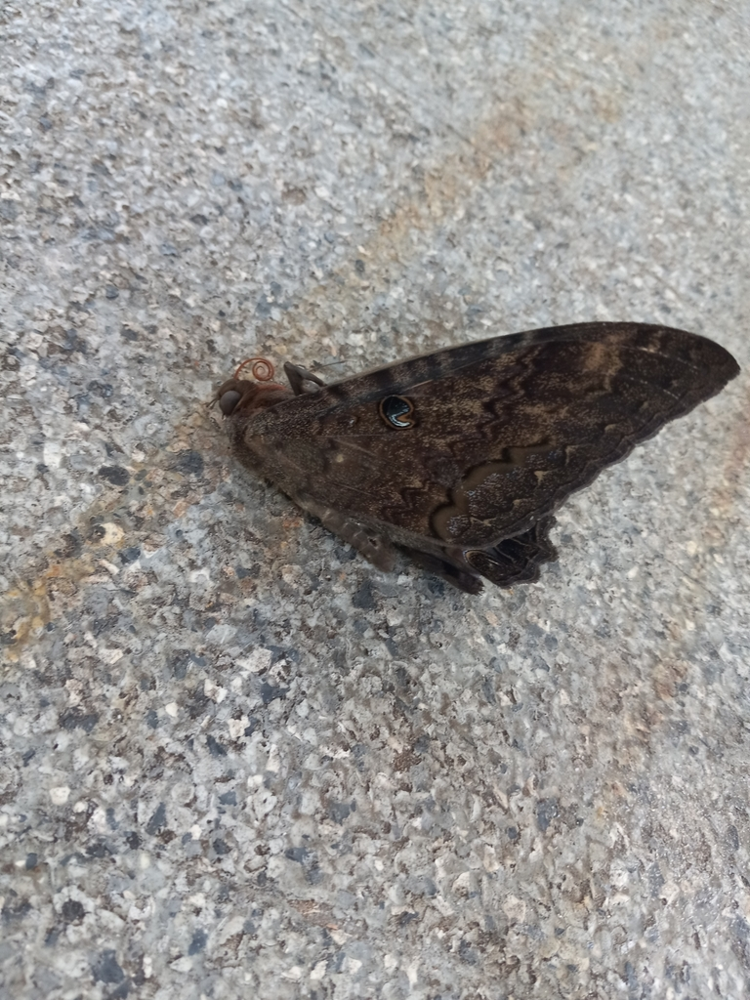

- A huge, dark, bat-like moth — wings spanning up to seven inches — resting in a shady spot is the black witch, one of the largest moths in North America.
- It is wrapped in folklore. In parts of Mexico it is the "mariposa de la muerte," an omen of death, while in the Caribbean and Texas it can be a sign of coming good fortune or money.
- For all its menacing looks, it is utterly harmless. The adult drinks fruit juices and cannot bite or sting.
- It is a long-distance wanderer, drifting north from the tropics through the warm months and turning up far from where it was born.
Very large, wingspan to about 5 to 7 in (12 to 18 cm).
Mottled dark brown and gray, with faint iridescent purple and a pale band across the wingtips.
A small comma- or number-9-shaped spot near the front edge of each forewing; females show a paler band.
Rests flat and wings-spread in shaded, sheltered spots by day.
Silent.
A bat-sized dark moth tucked into shade — under eaves, bridges, or dense foliage — by day, or flapping heavily at dusk. The sheer size and the little hook-shaped wing marks set it apart.
Adults sip juices from overripe and rotting fruit and tree sap. Caterpillars feed on the leaves of legumes such as acacia and other woody plants.
Resting in shady, sheltered spots by day — under eaves, in dense foliage, or beneath structures near the ponds — and around lights at night in the warm season.
A warm-season visitor, most likely from late spring through fall as individuals wander north from the tropics.
Just watch and enjoy. If one is resting in the shade, leave it be — it is only waiting out the daylight.

- © teschaim (CC-BY-NC), via iNaturalist